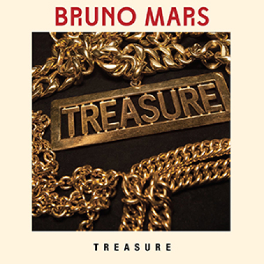
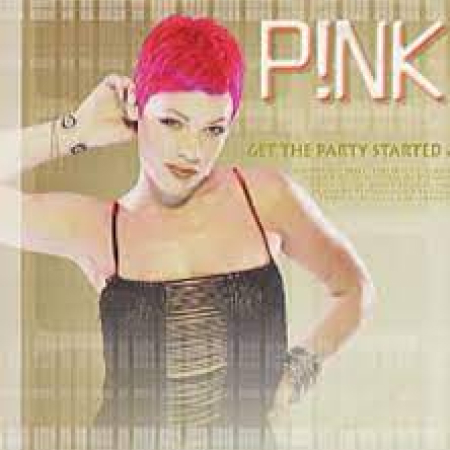
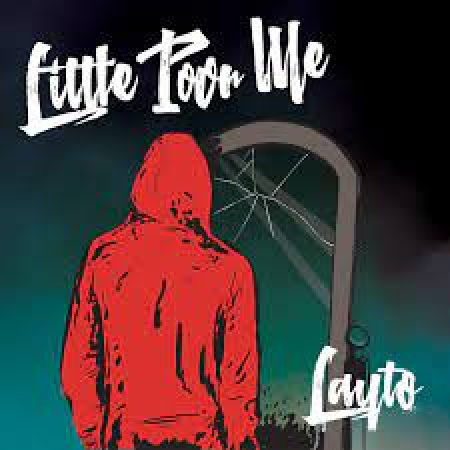
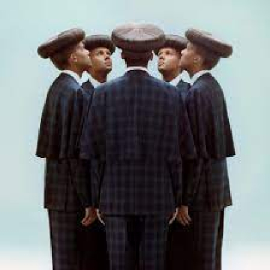
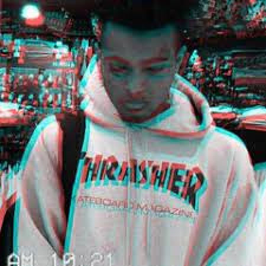

Playlist
Now playing
Starboy
The Weeknd (ft. Daft punk)
Billy Jean
Michael Jackson
Stay
The Kid Laroi (Ft. Justin Bieber)
Burn the house down
AJR
Jalebi Baby
Tesher x Jason Derulo
party vibes

Uptown Funk
Bruno Mars
Dua Lipa
Levitating
One Dance
Drake

Just give me a reason
Pink

Little poor me
Layto
Cooler than me
Mike Posner
Sunflower
Post Malone

L'enfer
Stromae
I feel like i'm drowning
Two Feet

Scared of the Dark
XXXtenctation
Voeg toe +